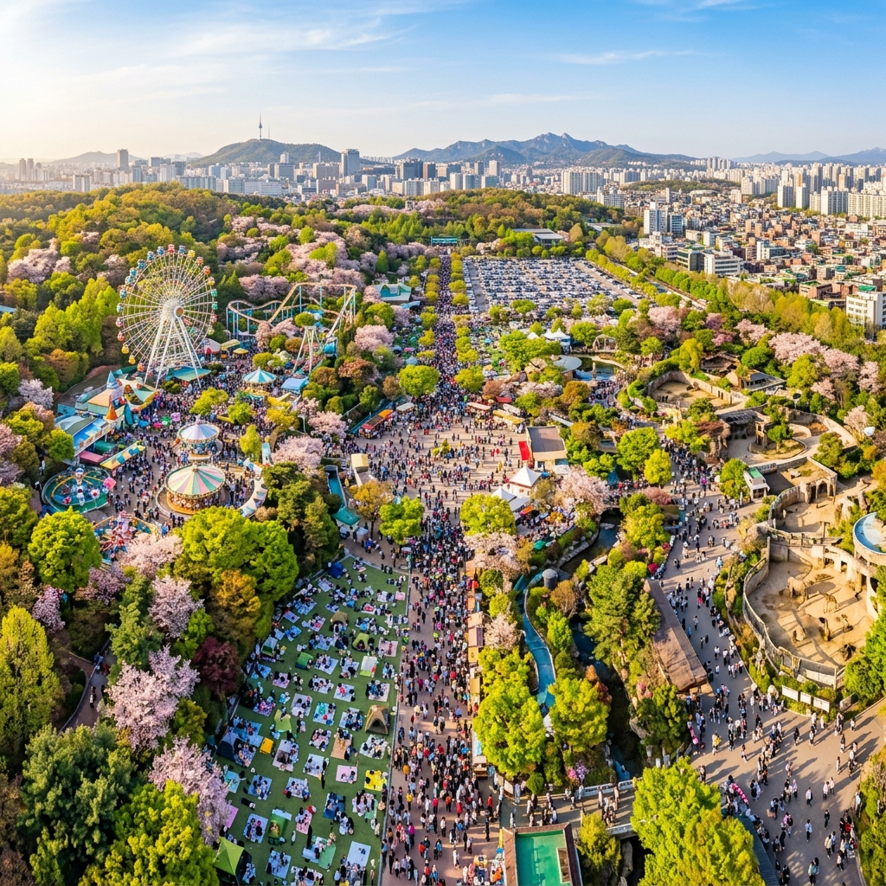
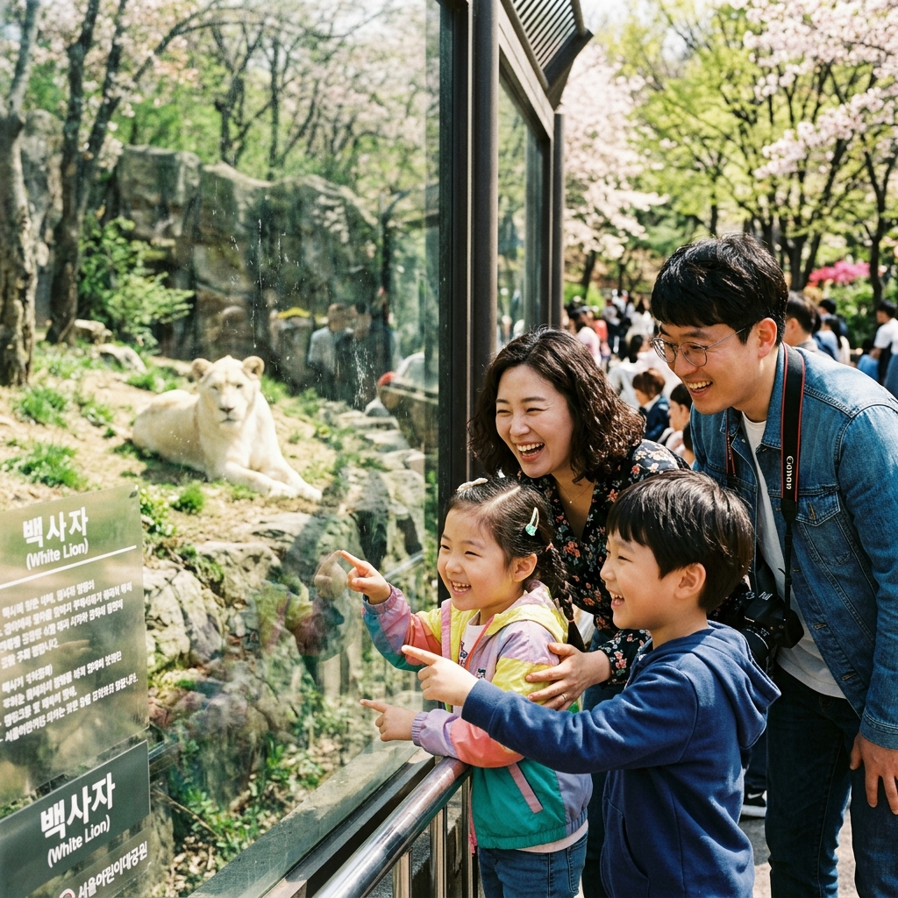
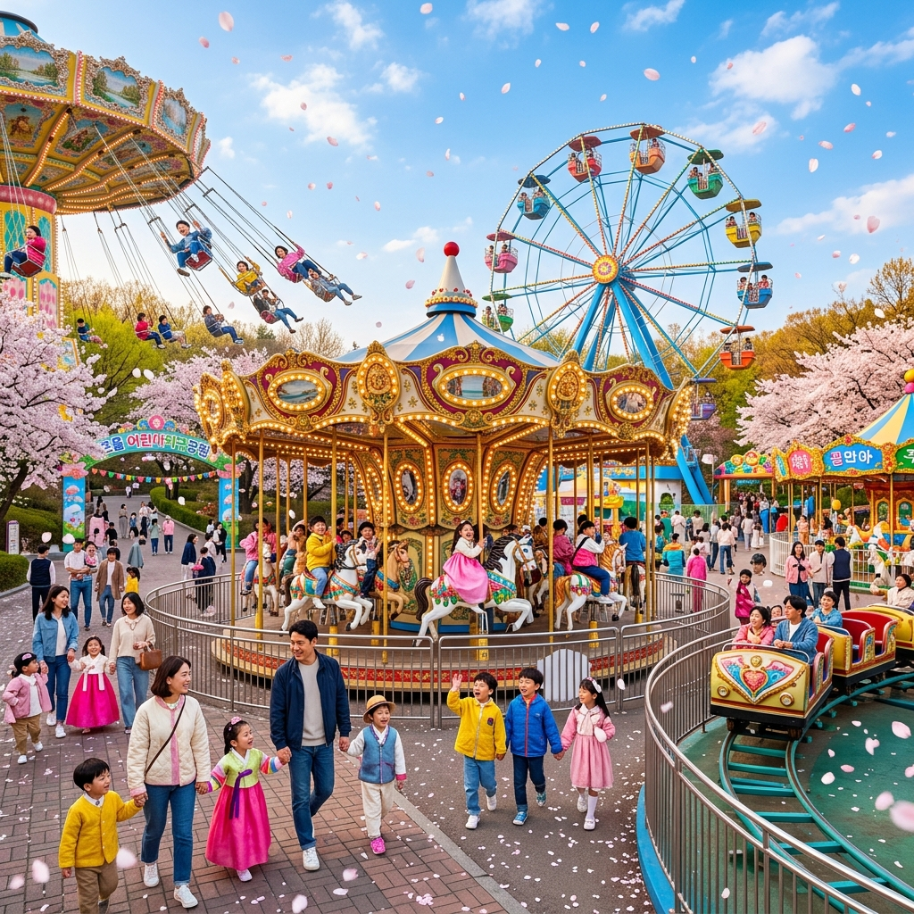

서울 어린이대공원 어린이날 2026: 무료 입장 가족 코스 & 동물원·놀이공원 완벽 가이드
5월 5일 어린이날, 아이의 손을 잡고 어디로 가야 할지 고민이신가요? 서울 한복판에 위치한 서울 어린이대공원은 매년 어린이날이면 수만 명의 가족이 모여드는 대한민국 최고의 어린이날 성지입니다. 놀랍게도 입장료는 완전 무료이며, 동물원부터 놀이공원, 야외 공연장, 식물원까지 하루 종일 즐길 수 있는 알찬 공간이 모두 갖춰져 있습니다. 2026년 어린이날을 더욱 특별하게 만들어 줄 완벽한 방문 가이드, 지금 바로 확인해 보세요.
| 항목 | 내용 |
|---|
| 위치 | 서울특별시 광진구 능동로 216 |
| 운영 시간 | 05:00 ~ 22:00 (연중무휴, 동물원 10:00~17:00) |
| 입장료 | 공원 입장 무료 / 놀이공원 자유이용권 별도 |
| 교통 | 5호선 어린이대공원역 1번 출구 도보 3분 |
| 주차 | 공원 내 주차장 유료 운영 (어린이날 극혼잡 예상) |
🌳 1. 어린이대공원, 5월의 성지가 된 이유
서울 광진구 능동 일대에 자리한 서울 어린이대공원은 1973년 개장 이후 반세기가 넘는 세월 동안 서울 시민, 특히 어린이들의 꿈과 추억이 담긴 공간으로 자리매김해 왔습니다. 총 53만 9,000㎡에 달하는 광활한 부지에는 동물원, 식물원, 놀이공원, 야외무대, 잔디광장, 어린이 전용 체험 공간이 촘촘하게 배치되어 있어 하루 방문만으로도 충분히 알찬 시간을 보낼 수 있습니다.
특히 어린이날인 5월 5일은 이곳이 단순한 공원을 넘어 하나의 '축제 현장'으로 변모하는 날입니다. 서울시와 광진구청이 합동으로 준비하는 어린이날 특별 프로그램은 매년 수십 가지에 달하며, 무료 버블쇼, 마술 공연, 먹거리 나눔 행사 등이 야외 곳곳에서 동시다발로 진행됩니다. 최근 몇 년간의 방문객 통계에 따르면 어린이날 하루 방문객 수가 20만 명을 넘어서는 경우도 있었을 만큼, 말 그대로 서울 최대 규모의 어린이날 행사장이라 할 수 있습니다.
이 공원이 그토록 사랑받는 또 다른 이유는 바로 교통 접근성입니다. 지하철 5호선 어린이대공원역 1번 출구에서 도보 3분 거리에 정문이 위치해 있어, 굳이 자가용을 이용하지 않아도 전국 어디서든 대중교통으로 손쉽게 접근할 수 있습니다. 7호선 군자역(2번 출구)에서도 도보 10분 이내이며, 인근에 광역버스 노선도 다수 운행되고 있어 수도권 외곽에서의 접근도 어렵지 않습니다.

[서울 어린이대공원 어린이날 전경] / AI 생성 이미지
🎫 2. 2026년 입장료 & 운영 정보 총정리
서울 어린이대공원의 가장 큰 매력 중 하나는 공원 자체 입장이 완전 무료라는 점입니다. 서울시가 운영하는 공공시설인 만큼 기본 입장에는 어떠한 비용도 발생하지 않습니다. 다만, 원내에 위치한 일부 유료 시설을 이용할 경우 추가 비용이 발생하므로, 사전에 정확한 요금 체계를 파악해 두시면 당황하지 않고 예산을 관리할 수 있습니다.
동물원은 기본 공원 입장과 마찬가지로 무료로 입장할 수 있습니다. 다만 동물원 내 일부 특별 체험 공간(예: 동물 먹이주기 체험)은 소정의 체험비를 받는 경우가 있으니 현장에서 확인하시기 바랍니다. 놀이공원(능동 어린이놀이공원)의 경우 자유이용권 기준으로 성인 약 10,000원~12,000원, 어린이 약 8,000원~10,000원 수준이며, 단품 탑승권으로 이용할 경우 시설별로 1,000원~3,000원의 개별 요금이 책정되어 있습니다. (2026년 공식 요금은 현장 또는 공식 홈페이지에서 반드시 재확인하시기 바랍니다.)
운영 시간도 꼭 체크해두세요. 공원 전체는 오전 5시부터 오후 10시까지 개방되지만, 동물원은 오전 10시에 문을 열어 오후 5시(동절기 4시)에 마감합니다. 어린이날 당일에는 특별 연장 운영이 시행될 수 있으니, 사전에 서울 어린이대공원 공식 홈페이지나 대표전화(02-450-9311)를 통해 운영 시간을 재확인하시길 강력히 권장합니다. 인기 시설은 오전 10시 이전부터 대기 줄이 형성되는 경우도 있으므로, 가급적 오전 9시 30분~10시 사이에 도착하는 것이 최선입니다.
🦁 3. 동물원 완벽 공략: 아이들이 가장 좋아하는 동물 BEST 5
서울 어린이대공원 동물원은 국내에서 두 번째로 긴 역사를 자랑하는 도심형 동물원으로, 현재 총 90여 종 700여 마리의 동물을 보유하고 있습니다. 규모 면에서는 과천 서울대공원 동물원보다 작지만, 동물과의 거리가 훨씬 가깝고 아이들이 눈높이에서 동물을 관찰할 수 있다는 점에서 오히려 어린 아이들에게 더 인상적인 경험을 선사하기도 합니다.
아이들이 가장 열광하는 동물 1위는 단연 백사자(흰사자)입니다. 전 세계에서도 희귀한 백색 아프리카 사자는 이 공원의 상징이자 SNS 인증샷 1순위로, 관람 시간 시작과 동시에 사람들이 몰려드는 핫스팟입니다. 활동량이 많은 오전 이른 시간대나 먹이 시간 직전에 방문하시면 생동감 있는 모습을 포착할 가능성이 높습니다.
2위는 침팬지 가족입니다. 사람과 가장 닮은 유인원인 침팬지는 도구를 사용하고 감정을 표현하는 모습으로 아이들의 시선을 사로잡습니다. 3위는 홍학(플라밍고), 4위는 아프리카 코끼리, 5위는 기린 순이며, 이 동물들의 관람 구역은 모두 입구에서 도보 10분 이내의 핵심 구역에 집중되어 있어 동선을 따라 효율적으로 돌아볼 수 있습니다. 유모차와 휠체어를 위한 무장애 동선이 잘 갖춰져 있으니 어린 영아를 동반한 가족도 불편함 없이 관람 가능합니다.

[어린이대공원 동물원 백사자 관람] / AI 생성 이미지
🎡 4. 놀이공원 어트랙션 이용 가이드
공원 북쪽에 위치한 능동 어린이놀이공원은 총 20여 종의 놀이기구를 보유한 아담하지만 알찬 소규모 놀이공원입니다. 대형 테마파크와 비교하면 스펙트럼이 넓지는 않지만, 롤러코스터, 회전목마, 범퍼카, 후룸라이드, 바이킹 등 어린이들이 즐길 수 있는 핵심 놀이기구는 빠짐없이 갖추고 있습니다. 특히 만 5~8세 어린이들을 위한 소형 어트랙션 구역이 별도로 마련되어 있어, 키 제한으로 인해 대형 기구를 이용하기 어려운 어린 아이들도 충분히 즐길 수 있습니다.
어린이날 당일에는 인기 기구에 30분~1시간 이상의 대기가 발생하는 것이 일반적입니다. 효율적인 이용을 위해서는 입장 직후 가장 인기 있는 후룸라이드와 롤러코스터부터 탑승하고, 점심 시간 전후로 덜 인기 있는 기구를 즐기는 순서를 추천드립니다. 또한, 자유이용권을 구매할 경우 현장 구매보다 서울시 공공서비스 예약 시스템 등을 통한 사전 구매가 경우에 따라 할인 혜택을 제공하므로 반드시 사전에 확인해두시기 바랍니다.
놀이공원 내 물놀이 시설(워터폴)은 5월에는 미운영인 경우가 많으니, 물놀이를 기대하고 오셨다면 미리 현장에 문의해두는 것이 좋습니다. 놀이기구 이용 시 안전 수칙은 철저히 준수해 주세요. 특히 키 제한이 있는 기구는 담당 직원의 안내에 따라 탑승 여부를 결정하시고, 갑작스러운 날씨 변화에 대비해 우비나 여벌 옷을 챙겨오시는 것을 강력히 권장합니다.
🎉 5. 어린이날 특별 프로그램 & 이벤트 미리보기
2026년 어린이날을 맞이하여 서울 어린이대공원은 다채로운 특별 프로그램을 준비하고 있습니다. 매년 어린이날 당일과 전후 주말에는 야외 특설 무대에서 인기 캐릭터 공연, 마술쇼, 버블쇼, 아크로바틱 공연 등이 하루 3~4회 진행됩니다. 입장이 무료이므로 일찍 자리를 잡아두시는 것이 공연 관람의 핵심입니다.
특히 주목해야 할 프로그램은 어린이 직업 체험 행사입니다. 소방관, 경찰관, 요리사, 과학자 등 다양한 직업을 직접 체험해볼 수 있는 이 행사는 아이들의 상상력과 진로 탐색에 큰 도움을 주는 프로그램으로, 매년 수백 명의 어린이들이 참가 신청을 합니다. 사전 신청이 필요한 프로그램도 있으니, 공원 공식 홈페이지를 통해 4월 중순부터 시작되는 사전 접수를 꼭 확인하세요.
그 외에도 수제 풍선 나눠주기 행사, 무료 아이스크림 증정, 포토존 운영, 메이크업 아티스트가 직접 얼굴 페인팅을 해주는 행사 등 다양한 이벤트가 준비됩니다. 이러한 행사들은 선착순 또는 줄서기 방식으로 운영되므로, 원하는 프로그램에 참가하시려면 공원 개장 직후인 오전 10시 이전에 도착하는 것이 관건입니다. 2026년 공식 프로그램 일정은 서울 어린이대공원 공식 홈페이지(achim.or.kr) 및 서울시 공공서비스 예약 사이트에서 업데이트 예정입니다.
🚗 6. 주차장 & 교통편: 주차 전쟁 없이 오는 법
솔직히 말씀드리면, 어린이날 당일 서울 어린이대공원 주변의 교통 혼잡은 상당합니다. 공원 내 주차장(약 1,000면 규모)은 오전 9시를 기점으로 이미 만차가 되는 경우가 빈번하고, 주변 도로 역시 강변북로와 천호대로로 유입되는 차량으로 극심한 정체를 빚습니다. 따라서 어린이날 당일 자가용 방문은 가급적 지양하시길 권해드립니다.
가장 현명한 이동 수단은 단연 지하철 5호선입니다. 어린이대공원역 1번 출구에서 정문까지의 거리는 약 250m로, 걷기에도 전혀 부담이 없습니다. 역 바로 앞에서부터 공원으로 향하는 방문객들로 인해 분위기가 달아오르는 느낌도 이날만의 특별한 경험입니다. 7호선 군자역에서는 2번 출구로 나와 능동로를 따라 도보 약 10분이면 공원 후문에 닿을 수 있습니다.
부득이하게 자가용을 이용해야 하신다면, 차량 공유(카풀)를 최대한 활용하시고, 공원 인근 유료 주차장(건대입구 롯데백화점, 어린이대공원 인근 민영 주차장 등)을 사전에 예약해 두시는 것을 추천드립니다. 또한 서울 외곽에서 오신다면, 잠실역이나 건대입구역 인근에 차를 주차하고 지하철로 환승하시는 '파크 앤 라이드' 전략도 효과적입니다.

[어린이대공원 놀이공원 어트랙션] / AI 생성 이미지
🍱 7. 주변 먹거리 & 편의 시설 완벽 가이드
하루 종일 공원에서 시간을 보낼 계획이라면 식사 계획도 꼼꼼히 세워두셔야 합니다. 공원 내에는 여러 개의 간이 매점과 푸드코트가 운영되고 있으나, 어린이날 당일에는 수요가 폭발하여 20~30분 이상 줄을 서야 하는 상황이 일반적입니다. 따라서 도시락을 직접 준비해오시는 것이 시간과 비용을 모두 절약하는 최선책입니다.
공원 내에는 피크닉을 즐길 수 있는 잔디밭이 여러 곳 마련되어 있으며, 돗자리 위에서의 도시락 피크닉은 어린이날의 빼놓을 수 없는 낭만이기도 합니다. 돗자리와 간식, 음료수는 미리 준비해 오세요. 공원 주변의 뚝섬 한강공원 방면에도 편의점과 음식 트럭이 여러 곳 있으니, 공원 이용 후 강변으로 이동해 저녁을 즐기는 코스도 훌륭한 마무리가 될 수 있습니다.
편의 시설 측면에서는, 공원 곳곳에 수유실과 기저귀 교환대가 완비되어 있어 영아를 동반한 가족도 안심하고 방문할 수 있습니다. 유모차 대여 서비스도 공원 내 안내소에서 제공되므로 유모차를 가져오기 불편하신 분들은 현장 대여를 활용하세요. 공원 전 구역에 무료 Wi-Fi가 제공되며, 비상 의무실도 상시 운영됩니다.
📅 8. 어린이날 전날 vs 당일 방문 전략
만약 어린이날 당일(5월 5일)의 극심한 혼잡이 걱정되신다면, 전날인 5월 4일(월요일) 방문도 훌륭한 대안입니다. 대부분의 특별 프로그램은 5월 3일(토요일)부터 5월 5일(화요일)까지 3일간 연속으로 진행되는 경우가 많으며, 주중인 5월 4일은 방문객이 상대적으로 적어 한결 여유로운 분위기에서 공원을 즐길 수 있습니다.
당일 방문을 선택하셨다면 오전 9시 30분 이전 도착을 강력히 권장합니다. 동물원이 오전 10시에 문을 열기 직전에 도착해 입장 대기 줄에서 선두를 차지하면, 오전 중에 동물원 전 구역을 여유롭게 관람할 수 있습니다. 반대로, 오전 11시 이후에 도착하면 주요 구역마다 긴 대기 줄이 형성되어 하루 방문 계획이 크게 흐트러질 수 있습니다.
📌 TIP: 어린이날 황금 타임라인 제안
09:30 공원 도착 → 10:00 동물원 오픈과 동시에 백사자·코끼리 관람 → 11:30 야외 공연 1회차 관람 → 12:30 도시락 피크닉 → 14:00 놀이공원 기구 탑승 → 16:00 야외 공연 2회차 관람 → 17:30 식물원 산책 후 귀가
✅ 9. 현명한 방문을 위한 체크리스트 10가지
어린이날 서울 어린이대공원 방문을 더욱 완벽하게 만들어줄 핵심 체크리스트를 공유해 드립니다. 출발 전 반드시 한 번 더 확인해 보시기 바랍니다.
① 대중교통 이용 확정: 5호선 어린이대공원역 1번 출구. 자가용은 포기하세요.
② 오전 9시 30분 이전 도착: 동물원·놀이공원 대기 최소화의 핵심입니다.
③ 도시락 & 물 준비: 공원 내 식음료 구매 대기 시간 최소 20분 이상 예상됩니다.
④ 편한 운동화 착용: 공원 전 구역을 걸으면 하루 1만 보 이상 걷게 됩니다.
⑤ 자외선 차단제 필수: 야외 활동이 많은 하루이니 SPF 50 이상을 추천합니다.
⑥ 돗자리 & 여벌 옷 챙기기: 잔디 피크닉 및 갑작스러운 날씨 변화 대비입니다.
⑦ 현금 소액 준비: 일부 체험 행사는 현금 결제만 가능할 수 있습니다.
⑧ 공식 프로그램 시간표 사전 확인: achim.or.kr에서 행사 일정을 확인하세요.
⑨ 아이 이름·연락처 태그 부착: 극혼잡 시 아이와 순간적으로 떨어지는 상황 대비입니다.
⑩ 배터리 팩 & 보조 배터리: 사진과 영상이 많아 배터리 소모가 빠릅니다.
서울 어린이대공원은 아이에게는 생애 첫 동물 관람과 놀이기구의 설렘을, 어른에게는 어린 시절의 향수와 가족의 소중함을 동시에 느끼게 해주는 특별한 공간입니다. 2026년 어린이날, 온 가족이 함께하는 빛나는 하루를 어린이대공원에서 만들어 보세요!
#서울어린이대공원
#어린이날2026
#어린이날무료입장
#어린이대공원동물원
#능동어린이공원
#어린이날가볼만한곳
#서울가족여행
#어린이날행사
#어린이대공원놀이공원
#5월서울여행